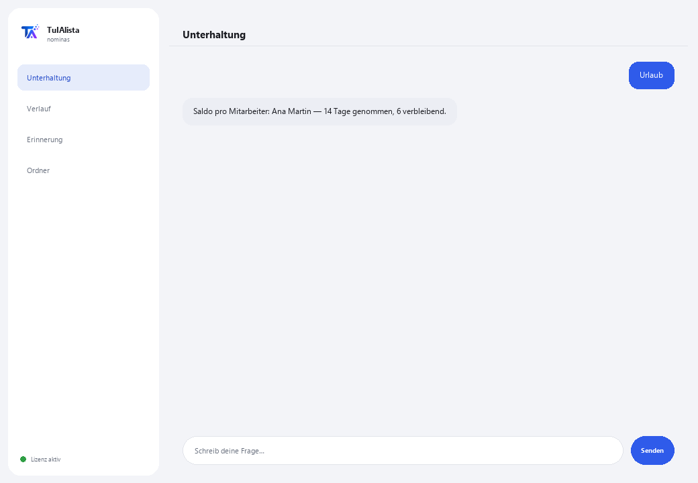

Agent für Lohnabrechnung und Personalwesen
Organisiert Ihre Belegschaft, berechnet Urlaub nach dem geltenden Arbeitsrecht und überwacht kritische HR-Termine — ohne dass die Daten Ihr Gerät verlassen.
Was löst er und was brauchen Sie?
Mitarbeiterdaten sind hochsensibel und dürfen nicht in der Cloud landen. Dieser Agent verarbeitet sie zu 100 % auf Ihrem Gerät: Er lädt Ihre Belegschaft, berechnet den Urlaubssaldo nach dem geltenden Arbeitsrecht und warnt Sie vor kritischen Terminen (Vertragsende, Jubiläen), bevor sie Ihnen entgehen.
- Sie brauchen: Ihren Lizenzschlüssel (TIA-XXXX-XXXX-XXXX-XXXX) und Ihre Belegschaft in Excel oder CSV. Kein Python, keine technischen Kenntnisse.
- Erstes Ergebnis in weniger als 5 Minuten: Sie installieren, aktivieren, wählen Ihren Ordner und führen Urlaub aus, um den Saldo jedes Mitarbeiters zu sehen.
- Die Daten Ihrer Mitarbeiter verlassen nie Ihren Computer — die Berechnung läuft lokal.
soporte@tuialista.com oder besuche tuialista.com/soporte — wir antworten normalerweise am selben Werktag.1 Was dieser Agent tut
Sie zeigen ihm den Ordner mit Ihrer Belegschaft (in Excel oder CSV) und er:
- Lädt die Mitarbeiterdaten und erkennt automatisch die Spalten (Name, Position, Gehalt, Eintrittsdatum, Vertragsart...), auch mit unterschiedlichen Namen.
- Berechnet den Urlaubssaldo nach dem geltenden Arbeitsrecht (Reform “würdiger Urlaub” 2023).
- Warnt Sie vor kritischen Terminen: Vertragsende und bevorstehende Jubiläen.
- Erstellt eine Lohnübersicht (Gesamt, Durchschnitt, nach Abteilung und Vertragsart).
- Listet bevorstehende Jubiläen für Auszeichnungen auf.
- Warnt vor bald auslaufenden Verträgen.
- Erstellt einen Personalbericht (Einstellungen, Austritte, Personalzahl nach Bereich).
- Beantwortet HR-Fragen mit anonymisiertem Kontext.
Ergebnis: eine organisierte HR-Abteilung, mit Terminen unter Kontrolle und Daten immer zu Hause.
2 Installation (2 Minuten)
Für Windows. Keine dauerhafte Internetverbindung nötig, nichts wird in die Cloud hochgeladen.
Laden Sie das Installationsprogramm von tuialista.com/descargar herunter (Lohn-Agent) und öffnen Sie es. Es erstellt eine Verknüpfung mit dem Logo auf Ihrem Desktop — kein Python oder Terminal erforderlich.
Doppelklicken Sie auf das neue Symbol. Fügen Sie Ihren Lizenzschlüssel ein (er wurde Ihnen beim Kauf per E-Mail zugesandt) und klicken Sie auf Aktivieren. Sie sehen ein grünes Häkchen, wenn er gültig ist.
Wählen Sie den Ordner mit Ihrer Belegschaft aus und klicken Sie auf Agent jetzt verwenden. Beim nächsten Mal startet er direkt — er merkt sich Ihren Schlüssel und Ihren Ordner.
3 So verwenden Sie ihn
Der Agent öffnet ein Chat-Fenster, wie eine Messaging-App — kein schwarzer Programmierer-Bildschirm. Sie schreiben Ihren Befehl oder Ihre Frage in das Textfeld unten, klicken auf Senden (oder Enter), und die Antwort erscheint als Nachricht, genau wie auf diesem echten Bild:

Die folgenden Befehle sind die Wörter, die Sie in dasselbe Textfeld eingeben können:
> UrlaubPro Mitarbeiter: seine Betriebszugehörigkeit, die ihm zustehenden Urlaubstage (Tabelle nach dem Arbeitsrecht mit der Reform 2023), die genommenen und die ausstehenden.
> Termine [Tage]HR-Ereignisse der nächsten N Tage (30 Standard): Vertragsende und Arbeitsjubiläen, sortiert nach Dringlichkeit. Z. B.: Termine 45.
> LohnGesamtlohn, Durchschnitts-, Höchst- und Mindestgehalt, und Aufschlüsselung nach Abteilung und Vertragsart — ohne unnötig sensible Einzeldaten offenzulegen.
> Jubiläen [Tage]Mitarbeiter, die in den nächsten N Tagen ein Arbeitsjubiläum haben (60 Standard).
> Verträge [Tage]Befristete Verträge, die in den nächsten N Tagen auslaufen (45 Standard), einschließlich kürzlich abgelaufener.
> BelegschaftGesamte Belegschaft, aktive, Austritte, Einstellungen des Jahres, und Aufschlüsselung nach Abteilung und Vertragsart.
> freie Frage?Schreiben Sie jede Frage in natürlicher Sprache, z. B.: wie viele Mitarbeiter erreichen dieses Quartal 5 Jahre?
> beendenBeendet die Sitzung (funktioniert auch mit exit).
Möchten Sie die 20 vollständigen Rezepte mit einem echten Beispiel für jedes sehen? Sehen Sie sich den Rezeptkatalog an — ein eigenes Dokument wegen seiner Länge: catalogo_recetas.pdf neben diesem Handbuch, oder die interaktive Version unter tuialista.com/guia/nominas/recetas.
4 Beispiele für häufige Anwendungen
Monatliche HR-Überprüfung
Termine 30 → Verträge 45
Urlaub des Jahres vorbereiten
Urlaub
Bericht für die Geschäftsleitung
Lohn → Belegschaft
Eine punktuelle Abfrage
wer hat nächsten Monat ein Jubiläum?
5 Häufig gestellte Fragen
Werden die Daten meiner Mitarbeiter ins Internet hochgeladen?
Welche Formate akzeptiert er?
Muss ich die Spalten exakt benennen?
Wie berechnet er den Urlaub?
Ist die Urlaubsberechnung rechtlich bindend?
Legt er individuelle Gehälter offen?
In welcher Sprache antwortet er?
Verändert er meine Mitarbeiterdatei?
Ich habe die Belegschaft aktualisiert, wird sie übernommen?
Kann ich mehrere Dateien haben?
6 Problemlösung
Mitarbeiter werden nicht geladen / zeigt “0 Mitarbeiter”
Eine Spalte wird falsch erkannt
Die Urlaubsberechnungen stimmen nicht mit den Erwartungen überein
Zeigt “Lizenz ungültig” oder fordert erneute Verbindung
“Keine KI-Anbieter konfiguriert”
Keine dieser Lösungen hat Ihr Problem behoben? Schreiben Sie uns direkt — wir schauen es uns gerne gemeinsam mit Ihnen an.
soporte@tuialista.com oder besuche tuialista.com/soporte — wir antworten normalerweise am selben Werktag.7 Datenschutz und Vertraulichkeit
Die Daten Ihrer Mitarbeiter verlassen nie Ihren Computer.
- Der Agent lädt und verarbeitet die Belegschaft lokal, auf Ihrem eigenen Gerät. Er lädt keine Mitarbeiterdaten auf einen Server hoch.
- Die Urlaubsberechnung, die Lohnberichte, die kritischen Termine und die Personalzahl werden auf Ihrem Gerät berechnet.
- Das Einzige, was über das Internet läuft, ist: (1) eine Überprüfung, dass Ihre Lizenz aktiv ist — die keine Mitarbeiterdaten enthält —, und (2) bei einer freien Frage wird ein anonymisierter Kontext (aggregierte Zusammenfassungen, ohne standardmäßig individuelle Gehälter offenzulegen) an die KI-Engine gesendet, um die Antwort zu verfassen.